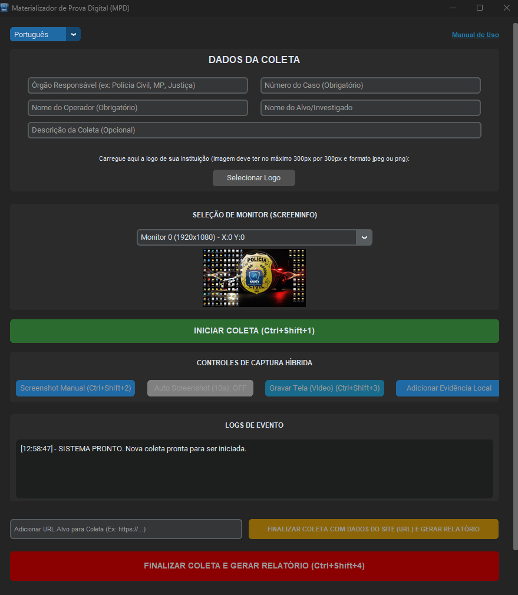
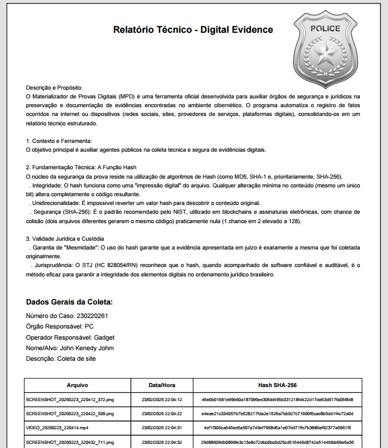
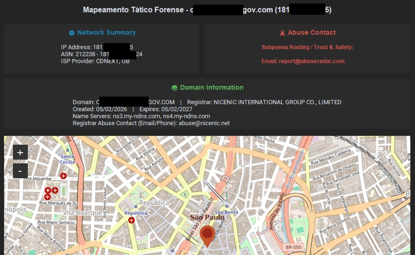

Monitoramento Ativo: Video Tutorial
Aprenda na prática como configurar e utilizar o MPD para materializar suas provas digitais.

Cadeia de Custódia e Segurança
- Todo material coletado via MPD é assegurado com cadeias de Hash SHA-256 e timestamps.
- Garante a não-repúdio, integridade e conformidade com resoluções do STJ em processos penais ou administrativos.
- A ferramenta funciona de maneira totalmente offline.
- Não envia dados para a web, garantindo que nenhuma informação dos alvos, senhas ou mídias sejam transmitidos a servidores em nuvem.
Portabilidade Forense
- Compatível com Sistema Operacional Windows 10 ou Windows 11 (Arquitetura 64-bits).
- O executável é do tipo Stand-Alone (Portable).
- Não exige instalação do Python, bibliotecas externas ou privilégios de Administrador.
- Pode rodar a partir de Pen Drives institucionais ou pastas restritas.
Interface de Operação

Recursos de Captura Híbrida
- Screenshot Manual: Tira uma foto instantânea da tela escolhida.
- Auto Screenshot: Tira fotos periodicamente a cada 10 segundos.
- Gravar Tela (Vídeo com Áudio): Inicia um fluxo de vídeo capturando toda a ação contínua, incluindo o áudio do sistema.
- Coleta Forense Local: Extração segura de evidências em computadores Windows (fotos, vídeos, documentos e arquivos), com armazenamento direto em pendrive ou pasta segura.
- Relatório Técnico Oficial: O MPD monta uma estrutura lacrada offline e emite um Relatório Técnico Avançado assinado por Hashes em formato PDF.
Organização e Clareza: O relatório pericial final é gerado automaticamente em formato PDF. Todas as informações coletadas, carimbos de tempo, assinaturas Hash e as capturas de tela são consolidadas e organizadas de maneira estruturada e profissional, prontas para anexação aos autos do processo.
> SUPORTE MULTIDIOMA DETECTADO: PT | EN | ES

Investigação de Infraestrutura (OSINT / Whois)
A aplicação MPD realiza também a coleta de dados da página investigada fazendo uma varredura profunda de dados para crimes virtuais hospedados em URLs específicas públicas.
- IP Whois: Extrai blocos (CIDR), ASN, ISP e contatos de Abuse Email para ofícios de quebra de sigilo.
- Mapeamento Geográfico (Geo IP): Coleta coordenadas da API e extrai print técnico do Dashboard ilustrando a localização do registro.
- Código Fonte Estrito: Salva o esqueleto HTML bruto em arquivos de texto, fixando tags e links caso os criminosos tentem excluir futuramente.

Conformidade com a ISO/IEC 27037:2012
A ISO/IEC 27037:2012 é uma norma internacional essencial que estabelece diretrizes para a identificação, coleta, aquisição e preservação de evidências digitais. O processo prioriza a integridade da evidência através de funções de hash, assegurando que se possa provar que a evidência apresentada ao final é exatamente a mesma coletada inicialmente. O MPD foi desenvolvido seguindo esse rigoroso arcabouço técnico.